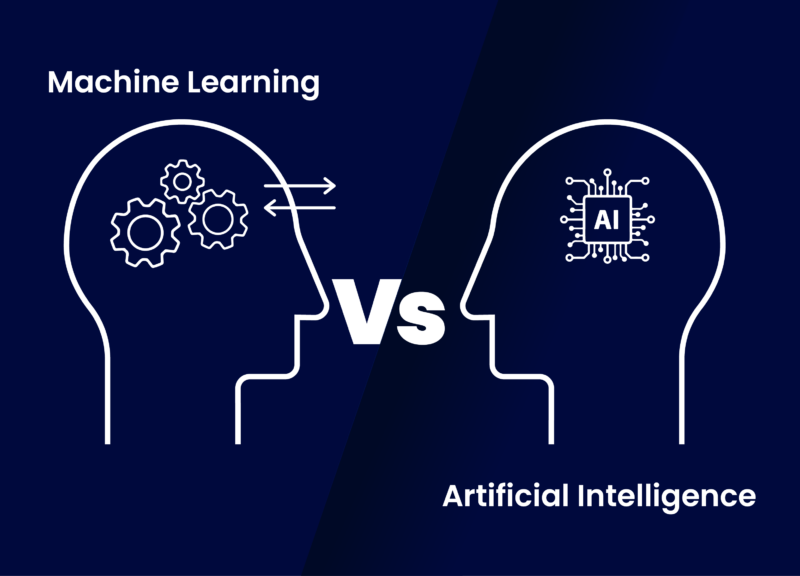
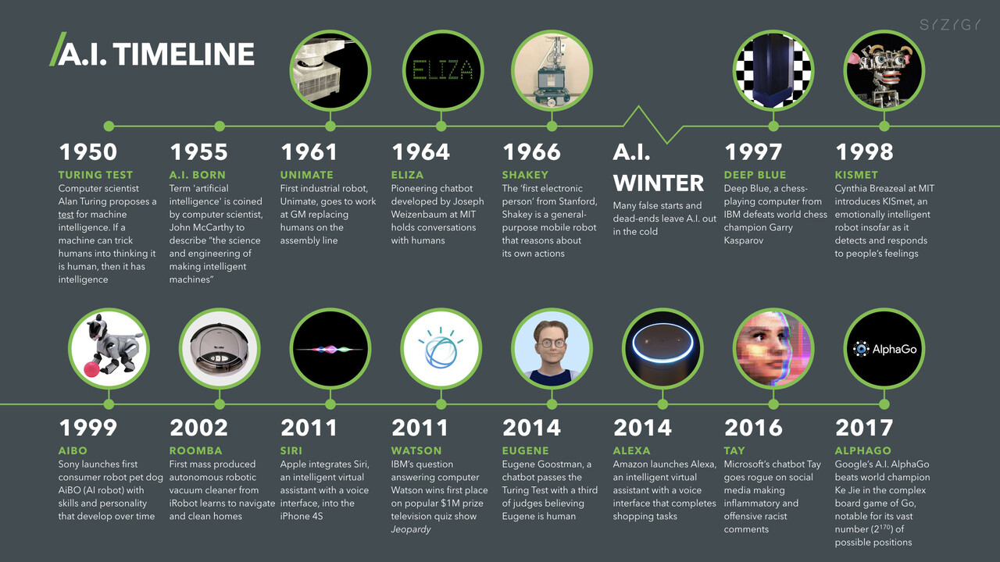

هوش مصنوعی و یادگیری ماشین در اقتصاد
زمان خواندن: 20 دقیقه
فهرست مطالب
مبانی و مفاهیم پایهای (AI) و (ML)
تبیین تفاوتها و تشابهات بین AI و ML
کاربردهای هوش مصنوعی و
یادگیری ماشین در اقتصاد
تعریف هوش مصنوعی (AI) و یادگیری ماشین (ML)
هوش مصنوعی (AI) و یادگیری ماشین (ML) دو حوزه مهم و به هم مرتبط در علم کامپیوتر هستند که کاربردهای گستردهای در زندگی روزمره، صنایع مختلف، و به ویژه در اقتصاد دارند. در ادامه به تعریف هر یک از این دو مفهوم میپردازیم:
هوش مصنوعی چیست؟
هوش مصنوعی حوزه توسعه رایانهها و روباتهایی است که میتوانند به گونهای رفتار کنند که هم تقلید و هم فراتر از تواناییهای انسان باشد. برنامههای مجهز به هوش مصنوعی میتوانند دادهها را برای ارائه اطلاعات تجزیه و تحلیل و زمینهسازی کنند یا بهطور خودکار اقداماتی را بدون دخالت انسان آغاز کنند.
امروزه هوش مصنوعی قلب بسیاری از فناوریهایی است که ما استفاده میکنیم، از جمله دستگاههای هوشمند و دستیارهای صوتی مانند سیری در دستگاههای اپل. شرکتها از تکنیکهایی مانند پردازش زبان طبیعی و بینایی کامپیوتری - توانایی رایانهها برای استفاده از زبان انسان و تفسیر تصاویر - برای خودکارسازی وظایف، تسریع در تصمیمگیری و فعال کردن مکالمات مشتری با چتباتها استفاده میکنند.
یادگیری ماشینی چیست؟
یادگیری ماشینی راهی به سوی هوش مصنوعی است. این زیرمجموعه هوش مصنوعی از الگوریتمهایی استفاده میکند تا بهطور خودکار بینشها را بیاموزد و الگوها را از دادهها تشخیص دهد و از این یادگیری برای تصمیمگیری بهتر استفاده کند. برنامه نویسان با مطالعه و آزمایش یادگیری ماشینی، محدودیت هایی را برای بهبود درک، شناخت و عملکرد یک سیستم کامپیوتری آزمایش می کنند. یادگیری عمیق، یک روش پیشرفته برای یادگیری ماشین، یک گام فراتر می رود. مدلهای یادگیری عمیق از شبکههای عصبی بزرگ - شبکههایی که مانند مغز انسان برای تجزیه و تحلیل منطقی دادهها عمل میکنند - برای یادگیری الگوهای پیچیده و پیشبینی مستقل از ورودی انسان استفاده میکنند.
تفاوت ها و ارتباطات
تفاوت ها:
AI یک حوزه گستردهتر است که شامل مفاهیم و تکنیکهای مختلفی مانند یادگیری ماشین، پردازش زبان طبیعی، و بینایی کامپیوتر میشود.
ML یکی از تکنیکهای مهم در AI است که بر یادگیری از دادهها تمرکز دارد.
ارتباطات:
یادگیری ماشین یکی از ابزارهای کلیدی برای تحقق اهداف هوش مصنوعی است. بسیاری از سیستمهای هوشمند از الگوریتمهای یادگیری ماشین برای بهبود عملکرد خود استفاده میکنند.
مثالها
هوش مصنوعی: رباتهای هوشمند، سیستمهای پردازش زبان طبیعی مانند دستیارهای صوتی (مانند سیری و الکسا)، و سیستمهای تشخیص تصویر.
یادگیری ماشین: الگوریتمهای توصیهگر در پلتفرمهایی مانند نتفلیکس و آمازون، مدلهای پیشبینی مالی، و سیستمهای تشخیص تقلب در تراکنشهای بانکی.
مبانی و مفاهیم پایهای هوش مصنوعی (AI) و یادگیری ماشین (ML)
برای درک بهتر هوش مصنوعی و یادگیری ماشین، آشنایی با مبانی و مفاهیم پایهای این دو حوزه ضروری است. در ادامه به توضیح این مبانی و مفاهیم پرداخته میشود:
مبانی هوش مصنوعی (AI)
تعریف هوش مصنوعی:
هوش مصنوعی به سیستمها و ماشینهایی اشاره دارد که قادر به انجام وظایفی هستند که به طور معمول به هوش انسانی نیاز دارند. این وظایف شامل یادگیری، استدلال، حل مسئله، درک زبان طبیعی، و تشخیص الگوها میشود.
انواع هوش مصنوعی:
هوش مصنوعی محدود (Narrow AI): AIای که برای انجام یک وظیفه خاص طراحی شده است. به عنوان مثال، سیستمهای تشخیص چهره یا دستیارهای صوتی.
هوش مصنوعی عمومی (General AI): AIای که توانایی انجام هر وظیفهای را دارد که یک انسان میتواند انجام دهد. این نوع AI هنوز در مرحله تحقیق و توسعه قرار دارد.
زیرشاخههای هوش مصنوعی:
پردازش زبان طبیعی (NLP): توانایی تعامل با زبان انسانی، شامل درک، تفسیر، و تولید زبان طبیعی.
بینایی ماشین (Computer Vision): توانایی تحلیل و درک تصاویر و ویدیوها.
روباتیک: طراحی و ساخت روباتهایی که میتوانند به صورت خودکار وظایف مختلف را انجام دهند.
مبانی یادگیری ماشین (ML)
تعریف یادگیری ماشین:
یادگیری ماشین شاخهای از AI است که بر اساس الگوریتمها و مدلهای آماری کار میکند تا به سیستمها اجازه دهد از دادهها بیاموزند و بدون نیاز به برنامهریزی صریح بهبود یابند.
انواع یادگیری ماشین:
یادگیری نظارتشده (Supervised Learning): در این روش، مدل با استفاده از دادههای برچسبدار (شامل ورودیها و خروجیهای صحیح) آموزش داده میشود. هدف این است که مدل بتواند خروجیهای جدید را پیشبینی کند. مثالها: طبقهبندی (Classification)، رگرسیون (Regression).
یادگیری بدون نظارت (Unsupervised Learning): در این روش، مدل با استفاده از دادههای بدون برچسب آموزش میبیند. هدف یافتن ساختارهای پنهان در دادهها است. مثالها: خوشهبندی (Clustering)، کاهش ابعاد (Dimensionality Reduction).
یادگیری تقویتی (Reinforcement Learning): در این روش، مدل با انجام اقدامات و دریافت بازخورد (پاداش یا تنبیه) از محیط، یاد میگیرد. هدف بهینهسازی استراتژی انجام اقدامات است. مثالها: بازیهای رایانهای، روباتیک.
الگوریتمهای یادگیری ماشین:
درخت تصمیم (Decision Tree):مدلی که تصمیمها را به صورت یک درخت از پرسشها و پاسخها نمایش میدهد.
ماشین بردار پشتیبانی (SVM):الگوریتمی برای طبقهبندی که یک مرز بهینه بین دستهها ایجاد میکند.
شبکههای عصبی (Neural Networks): مدلی الهامگرفته از ساختار مغز انسان که از لایههای متعددی از نورونها تشکیل شده است.
شبکههای عصبی عمیق (Deep Learning):نوعی از شبکههای عصبی که از لایههای بسیاری تشکیل شده و برای پردازشهای پیچیدهتر مانند تشخیص تصویر و زبان طبیعی به کار میرود.
مفاهیم پایهای در یادگیری هوش مصنوعی (AI)
برای درک عمیقتر از هوش مصنوعی، ضروری است که با برخی از مفاهیم پایهای و اساسی آشنا شوید. این مفاهیم به شما کمک میکنند تا پایههای علمی و تئوریک AI را بهتر درک کنید و بتوانید آنها را در مقالهتان به کار بگیرید.
1. عاملهای هوشمند (Intelligent Agents):
یک عامل هوشمند، موجودیتی است که در یک محیط قرار دارد و میتواند از طریق حسگرها (sensors) محیط را درک کند و از طریق عملگرها (actuators) بر روی آن عمل کند.
حسگرها: اجزایی که اطلاعات محیطی را جمعآوری میکنند (مانند دوربینها، میکروفونها، و حسگرهای دما).
عملگرها:اجزایی که قادر به انجام اعمالی در محیط هستند (مانند موتورها، نمایشگرها، و اسپیکرها).
2. پردازش زبان طبیعی (Natural Language Processing - NLP):
این شاخه از AI به تعامل بین کامپیوترها و زبان انسانی میپردازد. هدف NLP این است که کامپیوترها بتوانند زبان انسانی را بفهمند، تفسیر کنند و به طور معناداری پاسخ دهند.
3. بینایی ماشین (Computer Vision):
این شاخه از AI به توانایی سیستمها برای تفسیر و درک تصاویر و ویدیوها میپردازد. کاربردهای بینایی ماشین شامل تشخیص چهره، شناسایی اشیا، و تجزیه و تحلیل ویدیوها میباشد.
4. منطق فازی (Fuzzy Logic):
منطق فازی نوعی از منطق است که به جای استفاده از ارزشهای باینری (صفر و یک)، از ارزشهای درجهای استفاده میکند. این نوع منطق برای برخورد با عدم قطعیت و دادههای نامشخص کاربرد دارد.
5. شبکههای عصبی مصنوعی (Artificial Neural Networks - ANN):
شبکههای عصبی مصنوعی مدلی الهامگرفته از ساختار و عملکرد مغز انسان هستند. این شبکهها از واحدهای پردازشی به نام نورون تشکیل شدهاند که در لایههای مختلف سازماندهی شدهاند و برای انجام وظایف مختلف مانند تشخیص الگو و طبقهبندی دادهها استفاده میشوند.
6. یادگیری عمیق (Deep Learning):
یادگیری عمیق زیرمجموعهای از یادگیری ماشین است که بر استفاده از شبکههای عصبی عمیق (شبکههایی با لایههای متعدد) تمرکز دارد. یادگیری عمیق برای پردازشهای پیچیده مانند تشخیص تصویر، پردازش زبان طبیعی و بازیهای رایانهای به کار میرود.
7. الگوریتمهای ژنتیک (Genetic Algorithms):
الگوریتمهای ژنتیک الهامگرفته از فرایندهای طبیعی انتخاب طبیعی و ژنتیک هستند. این الگوریتمها برای یافتن راهحلهای بهینه در مسائل پیچیده استفاده میشوند.
8. سیستمهای خبره (Expert Systems):
سیستمهای خبره، برنامههای کامپیوتری هستند که دانش تخصصی و قواعد تصمیمگیری را برای حل مسائل خاص به کار میگیرند. این سیستمها شامل یک پایگاه دانش (knowledge base) و یک موتور استنتاج (inference engine) هستند.
9. یادگیری تقویتی (Reinforcement Learning):
در این روش، عامل هوشمند با تعامل با محیط و دریافت پاداش یا تنبیه از نتایج اعمال خود، یاد میگیرد که چگونه بهینه عمل کند. این نوع یادگیری برای مسائل پیچیدهای مانند بازیهای رایانهای و روباتیک بسیار مفید است.
10. بازنمایی دانش و استدلال (Knowledge Representation and Reasoning):
این حوزه به مطالعه روشهایی میپردازد که با استفاده از آنها اطلاعات و دانش در کامپیوترها ذخیره و مدیریت میشود و چگونه سیستمهای AI میتوانند از این دانش برای استدلال و حل مسئله استفاده کنند.
مفاهیم پایهای در یادگیری ماشین (ML)
یادگیری ماشین یکی از شاخههای اصلی هوش مصنوعی است که به سیستمها امکان میدهد تا بدون نیاز به برنامهریزی صریح، از دادهها بیاموزند و بهبود یابند. در این بخش، به بررسی مفاهیم پایهای و اساسی یادگیری ماشین میپردازیم:
1. دادهها (Data):

دادهها به عنوان سوخت یادگیری ماشین محسوب میشوند. بدون دادهها، مدلهای یادگیری ماشین نمیتوانند آموزش ببینند و عملکرد بهینهای داشته باشند.
دادههای آموزشی (Training Data): دادههایی که برای آموزش مدل استفاده میشوند.
دادههای آزمایشی (Testing Data):دادههایی که برای ارزیابی عملکرد مدل استفاده میشوند.
2. ویژگیها (Features):
ویژگیها یا مشخصهها، ورودیهایی هستند که مدل از آنها برای یادگیری استفاده میکند. انتخاب ویژگیهای مناسب (Feature Selection) و استخراج ویژگیها (Feature Extraction) دو مرحله مهم در فرآیند یادگیری ماشین هستند.
3. مدل (Model):
مدل در یادگیری ماشین، ساختاری ریاضی یا آماری است که برای پیشبینی یا طبقهبندی دادهها استفاده میشود. مدلها بر اساس دادههای آموزشی تنظیم میشوند و سپس برای پیشبینی دادههای جدید به کار میروند.
4. الگوریتم (Algorithm):
الگوریتم مجموعهای از قواعد و فرآیندها است که مدل از طریق آنها یاد میگیرد. الگوریتمهای یادگیری ماشین به چند دسته اصلی تقسیم میشوند:
یادگیری نظارتشده (Supervised Learning):مدل با استفاده از دادههای برچسبدار آموزش داده میشود. هدف این است که مدل بتواند برچسبهای دادههای جدید را پیشبینی کند.
طبقهبندی (Classification):پیشبینی برچسبهای دستهای.
رگرسیون (Regression):پیشبینی مقادیر پیوسته.
یادگیری بدون نظارت (Unsupervised Learning):مدل با استفاده از دادههای بدون برچسب آموزش میبیند. هدف یافتن ساختارهای پنهان در دادهها است.
خوشهبندی (Clustering):گروهبندی دادهها به دستههای همگن.
کاهش ابعاد (Dimensionality Reduction):کاهش تعداد ویژگیها برای سادهسازی دادهها.
یادگیری تقویتی (Reinforcement Learning):مدل از طریق تعامل با محیط و دریافت پاداش یا تنبیه یاد میگیرد.
عاملها (Agents): موجوداتی که از طریق آزمون و خطا در محیط بهینهسازی میشوند.
5. تابع هدف (Objective Function):
تابع هدف یا تابع هزینه (Cost Function) معیاری است که مدل تلاش میکند آن را به حداقل برساند. این تابع نشاندهنده میزان خطای مدل است.
6. بهینهسازی (Optimization):
فرآیندی که از طریق آن مدل پارامترهای خود را تنظیم میکند تا تابع هدف را به حداقل برساند. الگوریتمهای بهینهسازی مانند گرادیان نزولی (Gradient Descent) برای این منظور استفاده میشوند.
7. تنظیم بیش از حد (Overfitting) و تنظیم کمتر از حد (Underfitting):
تنظیم بیش از حد (Overfitting): زمانی که مدل به خوبی روی دادههای آموزشی عمل میکند اما در دادههای جدید عملکرد ضعیفی دارد. این مشکل به دلیل یادگیری بیش از حد جزئیات و نویزهای دادههای آموزشی رخ میدهد.
تنظیم کمتر از حد (Underfitting):زمانی که مدل نه تنها روی دادههای جدید، بلکه روی دادههای آموزشی نیز عملکرد ضعیفی دارد. این مشکل به دلیل ساده بودن بیش از حد مدل رخ میدهد.
8. اعتبارسنجی (Validation):
اعتبارسنجی فرآیندی است که در آن مدل با استفاده از مجموعه دادههای اعتبارسنجی (Validation Set) تنظیم میشود. این مجموعه دادهها برای تنظیم پارامترهای مدل و جلوگیری از تنظیم بیش از حد استفاده میشوند.
9. تکنیکهای ارزیابی مدل:
ماتریس درهمریختگی (Confusion Matrix): ابزاری برای ارزیابی عملکرد مدلهای طبقهبندی.
دقت (Accuracy):نسبت تعداد پیشبینیهای صحیح به کل پیشبینیها.
بازخوانی (Recall) و دقت (Precision):معیارهای ارزیابی عملکرد مدلهای طبقهبندی.
میانگین مربعات خطا (Mean Squared Error - MSE):معیار ارزیابی مدلهای رگرسیون.
10. تکنیکهای پیشپردازش داده:
تمیز کردن دادهها (Data Cleaning): حذف یا اصلاح دادههای ناقص یا نویزی.
نرمالسازی (Normalization): تغییر مقیاس ویژگیها به محدوده مشخصی.
تقسیمبندی دادهها (Data Splitting):تقسیم دادهها به مجموعههای آموزشی، اعتبارسنجی، و آزمایشی.
تبیین تفاوتها و تشابهات بین AI و ML
هوش مصنوعی (AI) و یادگیری ماشین (ML) دو حوزه مهم و به هم مرتبط در علم کامپیوتر هستند، اما هر کدام دارای ویژگیها و کاربردهای خاص خود هستند. در اینجا به تفاوتها و تشابهات بین AI و ML میپردازیم:

تشابهات بین AI و ML
هدف کلی:
هر دو فناوری به دنبال ایجاد سیستمهایی هستند که میتوانند وظایفی را انجام دهند که به طور معمول نیاز به هوش انسانی دارند. این وظایف شامل یادگیری، استدلال، و تصمیمگیری میشوند.
استفاده از دادهها:
هر دو به شدت وابسته به دادهها هستند. دادهها برای آموزش و بهبود مدلهای AI و ML ضروری هستند.
کاربردها:
هر دو در زمینههای مشابهی مانند پردازش زبان طبیعی، تشخیص تصویر، و اتوماسیون فرآیندها استفاده میشوند.
تفاوتهای بین AI و ML
تعریف و گستره:
هوش مصنوعی (AI):AI یک حوزه گستردهتر است که شامل تمام روشها و تکنیکهایی است که تلاش میکنند تا ماشینها را قادر به انجام وظایف هوشمندانه کنند. AI میتواند شامل الگوریتمهای قاعدهمحور، سیستمهای خبره، منطق فازی، و یادگیری ماشین باشد.
یادگیری ماشین (ML):ML زیرمجموعهای از AI است که بر اساس الگوریتمها و مدلهای آماری کار میکند تا سیستمها بتوانند از دادهها یاد بگیرند و بهبود یابند بدون نیاز به برنامهریزی صریح. ML به طور خاص بر روی فرآیند یادگیری و بهبود عملکرد از طریق دادهها تمرکز دارد.
روشهای مورد استفاده:
AI: از طیف گستردهای از روشها و تکنیکها استفاده میکند، از جمله منطق، برنامهریزی، بهینهسازی، و حتی تکنیکهای ابتکاری مانند الگوریتمهای ژنتیک.
ML: به طور عمده بر روی روشهای آماری و الگوریتمهایی تمرکز دارد که برای شناسایی الگوها و پیشبینیها از دادهها استفاده میشوند. این شامل الگوریتمهای نظارتشده، بدون نظارت، و تقویتی است.
سطح دخالت انسانی:
AI: ممکن است نیاز به دخالت و تنظیم دستی بیشتری داشته باشد، به خصوص در سیستمهای خبره یا سیستمهایی که بر اساس قواعد تعریف شده عمل میکنند.
ML: به طور عمده به دادهها و الگوریتمها برای یادگیری و بهبود خودکار وابسته است و نیاز به دخالت کمتری دارد پس از تنظیم اولیه.
پیچیدگی و تطبیقپذیری:
AI: میتواند شامل سیستمهای پیچیدهتری باشد که قادر به انجام وظایف چندگانه و پیچیده هستند، مانند روباتهای هوشمند یا سیستمهای تصمیمگیری پیچیده.
ML: معمولاً بر روی وظایف خاص و بهینهسازی آنها تمرکز دارد، مانند طبقهبندی ایمیلها، تشخیص تصاویر، یا پیشبینی روندهای مالی.
مروری بر تاریخچه و تکامل هوش مصنوعی (AI) و یادگیری ماشین (ML)

تاریخچه هوش مصنوعی (AI)
آغازین دوران (دهه 1950 تا 1970):
آغاز هوش مصنوعی:
دهه 1950 به عنوان شروع رسمی هوش مصنوعی شناخته میشود. جان مککارتی (John McCarthy) اولین بار اصطلاح "هوش مصنوعی" را در کنفرانسی در دارتموث در سال 1956 مطرح کرد.
پیشرفتهای اولیه:
در این دوره، تمرکز بر توسعه الگوریتمهای حل مسئله و بازیهای ساده مانند شطرنج بود. برنامههایی مانند "Logic Theorist" و "General Problem Solver" توسط آلن نیوئل و هربرت سایمون توسعه یافتند.
دوران طلایی اول (دهه 1970 تا 1980):
سیستمهای خبره:
سیستمهای خبره مانند MYCIN برای تشخیص پزشکی توسعه یافتند که از دانش انسانی در قالب قواعدی استفاده میکردند.
محدودیتها:
با وجود پیشرفتها، محدودیتهای سختافزاری و پیچیدگیهای محاسباتی باعث کاهش سرعت پیشرفتها شدند و بسیاری از پروژهها به دلیل عدم توانایی در تحقق انتظارات متوقف شدند.
زمستانهای AI (دهه 1980 تا 1990):
کاهش سرمایهگذاری:
عدم تحقق انتظارات و نتایج محدود باعث کاهش سرمایهگذاریها و توجه به AI شد. این دوره به عنوان "زمستان AI" شناخته میشود.
دوران تجدید حیات (دهه 1990 تا 2000):
پیشرفت در محاسبات:
افزایش قدرت محاسباتی و دسترسی به دادههای بیشتر باعث شد AI دوباره توجه محققان را جلب کند. الگوریتمهای جدید و بهبود یافته مانند شبکههای عصبی مصنوعی و الگوریتمهای یادگیری تقویتی توسعه یافتند.
کاربردهای عملی:
AI در زمینههایی مانند تشخیص گفتار، پردازش زبان طبیعی، و بینایی ماشین شروع به ورود به کاربردهای تجاری کرد.
(دهه 2000 تا 2020)
یادگیری عمیق:
با توسعه شبکههای عصبی عمیق (Deep Learning) و الگوریتمهای پیچیدهتر، AI توانست در زمینههایی مانند تشخیص تصویر، ترجمه ماشینی، و بازیهای رایانهای به موفقیتهای بزرگی دست یابد.
کاربردهای گسترده:
AI در صنایع مختلف مانند پزشکی، مالی، خودروهای خودران، و بسیاری از زمینههای دیگر به کار گرفته شده است.
در دوران مدرن (2020 تا کنون)
تحول GPT:
مدلهای زبانی بزرگ مانند GPT-3 و GPT-4 از شرکت OpenAI تحولی بزرگ در زمینه پردازش زبان طبیعی (NLP) ایجاد کردهاند. این مدلها با استفاده از میلیاردها پارامتر، قادر به تولید متون طبیعی و پاسخگویی به سوالات پیچیده هستند.
تولید محتوا:
مدلهای هوش مصنوعی مولد مانند GANها (Generative Adversarial Networks) قادر به تولید تصاویر، ویدئوها، و حتی موسیقی جدید هستند.
تاریخچه یادگیری ماشین (ML)
آغاز یادگیری ماشین (دهه 1950 تا 1970):
پیدایش اولیه:
یادگیری ماشین به عنوان زیرشاخهای از AI در دهه 1950 آغاز شد. آرتور ساموئل (Arthur Samuel) یکی از پیشگامان این حوزه بود که بازی چکرز را به ماشینها آموخت.
پرسپترون:
فرانک روزنبلات (Frank Rosenblatt) اولین مدل پرسپترون را معرفی کرد که یک نوع ساده از شبکه عصبی بود و میتوانست الگوها را شناسایی کند.
رشد و پیشرفت (دهه 1980 تا 1990):
شبکههای عصبی:
با معرفی مدلهای چند لایه پرسپترون (Multilayer Perceptron) و الگوریتم بازگشت پسرو (Backpropagation)، شبکههای عصبی توجه بیشتری جلب کردند.
الگوریتمهای جدید:
الگوریتمهای مختلفی مانند ماشینهای بردار پشتیبانی (SVM)، درختان تصمیم، و الگوریتمهای خوشهبندی توسعه یافتند.
یادگیری آماری و دادهکاوی (دهه 1990 تا 2000):
رویکردهای آماری:
یادگیری ماشین به سمت استفاده از روشهای آماری پیشرفت کرد. الگوریتمهای بیزین، مدلهای مخفی مارکوف (HMM)، و ماشینهای بردار پشتیبانی (SVM) از جمله روشهای برجسته این دوره بودند.
دادهکاوی:
با افزایش حجم دادهها، روشهای دادهکاوی و تحلیل دادهها به منظور استخراج الگوها و دانش از دادههای بزرگ توسعه یافتند.
انقلاب یادگیری عمیق (دهه 2010 تا کنون):
شبکههای عصبی عمیق:
توسعه شبکههای عصبی عمیق (Deep Neural Networks) توسط محققانی مانند یان لیکان (Yann LeCun)، جفری هینتون (Geoffrey Hinton)، و یوشوا بنجیو (Yoshua Bengio) باعث تحولی بزرگ در یادگیری ماشین شد. این مدلها توانستند در زمینههایی مانند تشخیص تصویر، ترجمه ماشینی، و بازیهای رایانهای به موفقیتهای بزرگی دست یابند.
کاربردهای گسترده:
یادگیری ماشین در طیف وسیعی از صنایع و کاربردها از جمله پزشکی، مالی، خودروهای خودران، و حتی هنر و موسیقی به کار گرفته شده است.
کاربردهای هوش مصنوعی و یادگیری ماشین در اقتصاد
هوش مصنوعی (AI) و یادگیری ماشین (ML) تاثیرات چشمگیری در حوزه اقتصاد داشتهاند. این فناوریها میتوانند به بهبود کارایی، کاهش هزینهها و افزایش دقت در تصمیمگیریهای اقتصادی کمک کنند. در ادامه به برخی از مهمترین کاربردهای AI و ML در اقتصاد پرداخته میشود:
1. پیشبینی بازار و تحلیل دادههای مالی:
پیشبینی قیمت سهام:
استفاده از الگوریتمهای یادگیری ماشین برای تحلیل الگوهای تاریخی قیمت سهام و پیشبینی تغییرات آینده.
تحلیل احساسات بازار:
استفاده از پردازش زبان طبیعی (NLP) برای تحلیل اخبار، مقالات، و شبکههای اجتماعی به منظور ارزیابی احساسات و تأثیر آن بر بازارهای مالی.
مدلسازی ریسک:
استفاده از AI برای شناسایی و مدیریت ریسکهای مالی و اقتصادی، از جمله ریسک اعتباری و ریسک بازار.
2. اتوماسیون فرآیندهای مالی:
اتوماسیون فرآیندهای حسابداری:
استفاده از رباتهای نرمافزاری و الگوریتمهای یادگیری ماشین برای انجام وظایف حسابداری، مانند پردازش فاکتورها و تطبیق تراکنشها.
مدیریت سرمایهگذاری:
استفاده از الگوریتمهای AI برای ایجاد و مدیریت پرتفویهای سرمایهگذاری بهینه.
3. بهینهسازی زنجیره تأمین:
پیشبینی تقاضا:
استفاده از یادگیری ماشین برای پیشبینی تقاضای محصولات و بهینهسازی موجودی.
مدیریت لجستیک:
بهینهسازی مسیرهای حمل و نقل و کاهش هزینههای لجستیک با استفاده از الگوریتمهای هوشمند.
4. بانکداری و خدمات مالی:
ارزیابی اعتباری:
استفاده از الگوریتمهای AI برای ارزیابی اعتبار مشتریان و تخصیص وام.
تشخیص تقلب:
استفاده از یادگیری ماشین برای شناسایی الگوهای تقلب در تراکنشهای مالی.
5. بازاریابی و مدیریت مشتری:
تجزیه و تحلیل مشتری:
استفاده از AI برای تحلیل دادههای مشتریان و ایجاد پروفایلهای دقیق از رفتار و ترجیحات آنها.
توصیهگرها:
استفاده از سیستمهای توصیهگر مبتنی بر AI برای پیشنهاد محصولات و خدمات متناسب با نیازهای مشتریان.
6. بهبود تصمیمگیری و استراتژیهای اقتصادی:
تحلیل کلاندادهها:
استفاده از AI برای تحلیل کلاندادهها و ارائه بینشهای دقیق به سیاستگذاران و مدیران اقتصادی.
مدلسازی اقتصاد کلان:
استفاده از مدلهای یادگیری ماشین برای پیشبینی روندهای اقتصادی کلان و تاثیر سیاستهای اقتصادی.
7. بازارهای کار و منابع انسانی:
استخدام و مدیریت استعداد:
استفاده از AI برای تحلیل رزومهها، انجام مصاحبههای اولیه و انتخاب بهترین نامزدها برای موقعیتهای شغلی.
پیشبینی نیازهای نیروی کار:
استفاده از یادگیری ماشین برای پیشبینی نیازهای آینده نیروی کار و برنامهریزی آموزشها و توسعه مهارتها.
8. بیمه و مدیریت ریسک:
قیمتگذاری بیمه:
استفاده از AI برای ارزیابی ریسکهای فردی و تعیین قیمتهای دقیق بیمه.
تشخیص تقلب در بیمه:
استفاده از الگوریتمهای یادگیری ماشین برای شناسایی الگوهای تقلب در درخواستهای بیمه.
مزایا و چالش ها
مزایای هوش مصنوعی و یادگیری ماشین در اقتصاد
1. بهبود دقت و کارایی:
پیشبینی دقیقتر:
AI و ML میتوانند الگوهای پیچیده دادهها را تحلیل کرده و پیشبینیهای دقیقتری در زمینههای مختلف اقتصادی از جمله قیمت سهام، تقاضای بازار و روندهای اقتصادی ارائه دهند.
اتوماسیون فرآیندها:
این فناوریها میتوانند فرآیندهای تکراری و وقتگیر مانند حسابداری، مدیریت زنجیره تأمین و خدمات مشتری را اتوماسیون کنند، که منجر به افزایش کارایی و کاهش هزینهها میشود.
2. تصمیمگیری بهتر:
تحلیل دادههای بزرگ:
AI و ML قادر به تحلیل حجم عظیمی از دادهها در زمان کوتاه هستند و میتوانند بینشهای ارزشمندی برای تصمیمگیریهای استراتژیک ارائه دهند.
مدیریت ریسک:
این فناوریها میتوانند به شناسایی و مدیریت ریسکهای مالی و عملیاتی کمک کنند، که منجر به کاهش خطرات و بهبود پایداری مالی میشود.
3. بهبود خدمات مشتری:
سیستمهای توصیهگر:
AI میتواند از طریق تجزیه و تحلیل رفتار مشتریان، محصولات و خدمات مناسب را پیشنهاد دهد، که منجر به افزایش رضایت و وفاداری مشتریان میشود.
چتباتها و دستیارهای مجازی:
این ابزارها میتوانند به صورت 24/7 به سوالات مشتریان پاسخ دهند و مشکلات آنها را حل کنند، که بهبود تجربه مشتری را به همراه دارد.
4. افزایش بهرهوری:
بهینهسازی عملیات:
یادگیری ماشین میتواند فرآیندهای مختلف مانند تولید، حمل و نقل و مدیریت موجودی را بهینهسازی کند، که منجر به کاهش هزینهها و افزایش بهرهوری میشود.
چالشهای هوش مصنوعی و یادگیری ماشین در اقتصاد
1. مسائل اخلاقی و حریم خصوصی:
نگرانیهای حریم خصوصی:
استفاده گسترده از دادهها توسط AI و ML میتواند به نگرانیهای مربوط به حریم خصوصی منجر شود. حفاظت از دادههای شخصی و رعایت قوانین حریم خصوصی چالشهای بزرگی هستند.
تبعات اخلاقی:
تصمیمگیریهای AI ممکن است گاهی اوقات منجر به تبعیض یا ناعدالتی شود. اطمینان از این که الگوریتمها به صورت عادلانه و بدون تبعیض عمل میکنند، یک چالش مهم است.
2. پیچیدگیهای فنی:
پیشرفت سریع فناوری:
تکنولوژیهای AI و ML به سرعت در حال تغییر و پیشرفت هستند و سازمانها ممکن است با چالشهای ناشی از تطابق با این تغییرات مواجه شوند.
نیاز به تخصص:
توسعه و پیادهسازی مدلهای AI و ML نیازمند تخصصهای فنی و مهارتی بالاست. کمبود نیروی انسانی ماهر در این حوزه میتواند یک مانع بزرگ باشد.
3. هزینههای بالا:
سرمایهگذاری اولیه:
پیادهسازی AI و ML نیاز به سرمایهگذاری اولیه بالا دارد. خرید تجهیزات مناسب، جمعآوری دادههای لازم و توسعه مدلها ممکن است هزینهبر باشد.
نگهداری و بهروزرسانی:
مدلهای AI و ML نیاز به نگهداری و بهروزرسانی مداوم دارند تا کارایی و دقت خود را حفظ کنند که این امر میتواند هزینههای جاری را افزایش دهد.
4. اعتماد و پذیرش عمومی:
اعتماد به تصمیمات AI:
برخی افراد و سازمانها ممکن است نسبت به تصمیمات گرفته شده توسط AI بیاعتماد باشند و ترجیح دهند تصمیمات توسط انسانها گرفته شود.
پذیرش عمومی:
برای بهرهگیری کامل از مزایای AI، نیاز به پذیرش عمومی و اعتماد به این فناوریها وجود دارد. اطلاعرسانی و آموزش میتواند در این زمینه مفید باشد.
مطالعات موردی
بررسی نمونههای واقعی از کاربردهای AI و ML در اقتصاد:
1. آمازون (Amazon)
کاربرد:
- سیستمهای توصیهگر: آمازون از الگوریتمهای یادگیری ماشین برای تجزیه و تحلیل رفتار خرید مشتریان استفاده میکند تا محصولات مناسبی را به آنها پیشنهاد دهد.
موفقیت:
- این سیستم به افزایش فروش آمازون کمک کرده است. تخمین زده میشود که حدود 35 درصد از فروشهای آمازون از طریق سیستمهای توصیهگر انجام میشود.
درسها:
- تحلیل دادههای بزرگ و استفاده هوشمندانه از آنها میتواند به بهبود تجربه مشتری و افزایش درآمد کمک کند.
2. جیپی مورگان (J.P. Morgan)
کاربرد:
- مدیریت ریسک و تشخیص تقلب: این بانک از الگوریتمهای AI برای شناسایی الگوهای تقلب و مدیریت ریسکهای مالی استفاده میکند.
موفقیت:
- J.P. Morgan توانسته است با استفاده از این فناوریها، ریسکهای مالی را کاهش داده و بهرهوری عملیاتی خود را افزایش دهد.
درسها:
- استفاده از AI در مدیریت ریسک میتواند به افزایش دقت و کارایی منجر شود و هزینههای ناشی از تقلب را به حداقل برساند.
3. نتفلیکس (Netflix)
کاربرد:
- توصیههای شخصیسازی شده: نتفلیکس از یادگیری ماشین برای ارائه توصیههای فیلم و سریال به کاربران خود استفاده میکند.
موفقیت:
- این سیستم منجر به افزایش تعداد مشترکان و کاهش نرخ لغو اشتراک شده است.
درسها:
- شخصیسازی تجربه کاربری بر اساس دادههای واقعی میتواند رضایت مشتریان را افزایش دهد و وفاداری آنها را تقویت کند.
.jpg)
4. گوگل (Google)
کاربرد:
- تبلیغات هدفمند: گوگل از الگوریتمهای AI برای نمایش تبلیغات هدفمند به کاربران استفاده میکند.
موفقیت:
- این سیستم یکی از عوامل اصلی درآمدزایی گوگل است.
درسها:
- بهرهگیری از دادههای کاربران برای ارائه محتوای هدفمند میتواند به افزایش اثربخشی تبلیغات و درآمدزایی کمک کند.
5. زیمنس (Siemens)
کاربرد:
- بهینهسازی فرآیندهای تولید: زیمنس از الگوریتمهای یادگیری ماشین برای بهینهسازی فرآیندهای تولید و کاهش هزینهها استفاده میکند.
موفقیت:
- این فناوریها به زیمنس کمک کرده است تا بهرهوری تولید را افزایش داده و هزینههای عملیاتی را کاهش دهد.
درسها:
- استفاده از AI در بهینهسازی عملیات تولید میتواند منجر به افزایش بهرهوری و کاهش هزینهها شود.
تحلیل موفقیتها و شکستها و درسهایی که میتوان از آنها آموخت
موفقیتها
افزایش دقت و کارایی: شرکتها توانستهاند با بهرهگیری از AI و ML دقت و کارایی فرآیندهای خود را بهبود بخشند.
بهبود تجربه مشتری: استفاده از الگوریتمهای توصیهگر و تحلیل دادههای مشتریان منجر به افزایش رضایت و وفاداری مشتریان شده است.
کاهش هزینهها: AI و ML به شرکتها کمک کردهاند تا هزینههای عملیاتی و مدیریتی خود را کاهش دهند.
مدیریت ریسک: با استفاده از این فناوریها، شرکتها توانستهاند ریسکهای مالی و عملیاتی خود را به نحو بهتری مدیریت کنند.
شکستها
پیچیدگی فنی: برخی شرکتها با چالشهای فنی در پیادهسازی و نگهداری سیستمهای AI و ML مواجه شدهاند.
مسائل اخلاقی و حریم خصوصی: برخی پروژهها به دلیل نگرانیهای مربوط به حریم خصوصی و تبعات اخلاقی با انتقادات مواجه شدهاند.
اعتماد عمومی: در برخی موارد، عدم اعتماد عمومی به تصمیمات AI منجر به مقاومت در برابر پذیرش این فناوریها شده است.

درسها
سرمایهگذاری در تخصص: برای موفقیت در پیادهسازی AI و ML، نیاز به نیروی انسانی ماهر و متخصص وجود دارد.
مدیریت تغییرات: سازمانها باید آماده باشند تا با تغییرات سریع فناوری هماهنگ شوند و فرآیندهای خود را متناسب با این تغییرات بهروزرسانی کنند.
رعایت مسائل اخلاقی: توجه به تبعات اخلاقی و رعایت حریم خصوصی کاربران از اهمیت بالایی برخوردار است.
ایجاد اعتماد عمومی: اطلاعرسانی و آموزش به کاربران و مشتریان میتواند به افزایش اعتماد و پذیرش عمومی فناوریهای AI و ML کمک کند.
آینده هوش مصنوعی و یادگیری ماشین در اقتصاد
روندها و پیشبینیهای آینده
گسترش اتوماسیون:
- پیشبینی میشود که AI و ML به طور فزایندهای در فرآیندهای تجاری و صنعتی به کار گرفته شوند، که منجر به افزایش اتوماسیون و بهینهسازی فرآیندها خواهد شد. این امر میتواند شامل اتوماسیون در تولید، حمل و نقل، خدمات مشتری و حتی در فرآیندهای مدیریتی باشد.
توسعه سیستمهای هوشمند:
- استفاده از سیستمهای هوشمند در تحلیل دادهها، تصمیمگیریهای استراتژیک و بهبود خدمات مشتری به طور گستردهای گسترش خواهد یافت. سیستمهای هوشمند میتوانند به تحلیلهای پیشبینیکننده، تشخیص الگوها و ارائه بینشهای دقیق برای تصمیمگیری کمک کنند.
افزایش سرمایهگذاری در تحقیق و توسعه:
- شرکتها و دولتها سرمایهگذاریهای بیشتری در حوزه تحقیق و توسعه AI و ML خواهند داشت تا از پیشرفتهای تکنولوژیکی بهرهبرداری کنند. این سرمایهگذاریها میتواند شامل تحقیق در زمینه الگوریتمهای جدید، بهبود مدلهای یادگیری و توسعه کاربردهای نوین باشد.
فرصتها و تهدیدهای پیش رو
فرصتها:
- افزایش بهرهوری: استفاده از AI و ML میتواند بهرهوری کسبوکارها را بهبود بخشد و هزینهها را کاهش دهد. به عنوان مثال، اتوماسیون فرآیندهای تولید میتواند زمان و هزینههای تولید را کاهش دهد.
- نوآوری در محصولات و خدمات: AI و ML میتوانند به توسعه محصولات و خدمات جدید و نوآورانه کمک کنند. این فناوریها میتوانند به شخصیسازی تجربه مشتری، ایجاد محصولات هوشمند و بهبود خدمات پس از فروش کمک کنند.
- تصمیمگیری بهتر: تحلیل دادههای بزرگ و استفاده از الگوریتمهای هوشمند میتواند به تصمیمگیریهای دقیقتر و استراتژیکتر منجر شود. شرکتها میتوانند از این تحلیلها برای شناسایی فرصتهای جدید، بهینهسازی استراتژیهای بازاریابی و مدیریت ریسک استفاده کنند.
تهدیدها:
- مسائل اخلاقی و حریم خصوصی: نگرانیهای مربوط به حریم خصوصی و تبعات اخلاقی میتواند موانعی برای پذیرش عمومی AI و ML ایجاد کند. باید اطمینان حاصل شود که استفاده از دادهها با رعایت حریم خصوصی و به صورت عادلانه انجام میشود.
- پیچیدگی فنی و هزینههای بالا: پیادهسازی و نگهداری سیستمهای AI و ML میتواند پیچیده و هزینهبر باشد. شرکتها نیاز به تخصصهای فنی بالا و سرمایهگذاریهای قابل توجه در زیرساختها دارند.
- نیاز به تخصص: کمبود نیروی انسانی ماهر در حوزه AI و ML میتواند چالشهای جدی ایجاد کند. آموزش و توسعه مهارتها برای نیروی کار موجود و جذب نیروی انسانی متخصص از اهمیت بالایی برخوردار است.
تاثیرات بلندمدت بر بازار کار و اقتصاد جهانی
تغییر در ماهیت مشاغل:
- اتوماسیون و AI ممکن است منجر به از بین رفتن برخی مشاغل سنتی شود، اما در عین حال، فرصتهای شغلی جدیدی را در حوزههای تکنولوژی و دادهمحور ایجاد خواهد کرد. برخی مشاغل نیاز به مهارتهای جدید خواهند داشت و کارگران باید با این تغییرات سازگار شوند.
افزایش تقاضا برای مهارتهای تخصصی:
- با رشد AI و ML، تقاضا برای مهارتهای تخصصی در حوزههای مرتبط افزایش خواهد یافت و آموزش و پرورش نقش کلیدی در تامین این نیازها خواهد داشت. دورههای آموزشی جدید و برنامههای توسعه مهارتها میتوانند به آمادهسازی نیروی کار برای آینده کمک کنند.
توزیع نابرابر سود اقتصادی:
- ممکن است نابرابریهای اقتصادی به دلیل تفاوت در توانایی کشورها و شرکتها در بهرهبرداری از AI و ML افزایش یابد. کشورها و شرکتهایی که در فناوریهای پیشرفته سرمایهگذاری کردهاند، میتوانند از مزایای بیشتری بهرهمند شوند.
تحولات در اقتصاد جهانی:
- AI و ML میتوانند به تحولاتی در ساختارهای اقتصادی و مدلهای کسبوکار منجر شوند، که تاثیرات بلندمدتی بر اقتصاد جهانی خواهد داشت. این فناوریها میتوانند به تغییر در نحوه تولید، توزیع و مصرف کالاها و خدمات منجر شوند و اقتصاد جهانی را به سمت کارایی بیشتر و نوآوری هدایت کنند.
نتیجهگیری
خلاصهای از نکات مهم مطرحشده
در این مقاله، به بررسی تاثیرات هوش مصنوعی (AI) و یادگیری ماشین (ML) بر اقتصاد پرداخته شد. این تکنولوژیها با توانایی تحلیل دادهها و ارائه پیشبینیهای دقیق، به بهبود دقت و کارایی در فرآیندهای اقتصادی کمک میکنند.
کاربردهای AI و ML:
- پیشبینی بازار و تحلیل دادههای مالی
- اتوماسیون فرآیندهای مالی
- بهینهسازی زنجیره تأمین
- بانکداری و خدمات مالی
- بازاریابی و مدیریت مشتری
- بهبود تصمیمگیری و استراتژیهای اقتصادی
- بازارهای کار و منابع انسانی
- بیمه و مدیریت ریسک
مزایا و چالشهای استفاده از AI و ML نیز مورد بررسی قرار گرفت:
مزایا:
- بهبود دقت و کارایی
- تصمیمگیری بهتر
- بهبود خدمات مشتری
- افزایش بهرهوری
چالشها:
- مسائل اخلاقی و حریم خصوصی
- پیچیدگیهای فنی
- هزینههای بالا
- اعتماد و پذیرش عمومی
تاکید بر اهمیت و نقش AI و ML در آینده اقتصاد
AI و ML نقش حیاتی در آینده اقتصاد خواهند داشت. این تکنولوژیها به کسبوکارها امکان میدهند تا بهرهوری خود را افزایش دهند، هزینهها را کاهش دهند و تصمیمگیریهای دقیقتر و استراتژیکتری داشته باشند.
گسترش اتوماسیون: AI و ML به طور فزایندهای در فرآیندهای تجاری و صنعتی به کار گرفته خواهند شد، که منجر به افزایش اتوماسیون و بهینهسازی فرآیندها میشود.
توسعه سیستمهای هوشمند: استفاده از سیستمهای هوشمند در تحلیل دادهها و بهبود خدمات مشتری به طور گستردهای گسترش خواهد یافت.
افزایش سرمایهگذاری در تحقیق و توسعه: شرکتها و دولتها سرمایهگذاریهای بیشتری در حوزه تحقیق و توسعه AI و ML خواهند داشت تا از پیشرفتهای تکنولوژیکی بهرهبرداری کنند.
پیشنهاداتی برای تحقیقات بیشتر و سیاستگذاریهای مربوط
تحقیقات بیشتر:
- نیاز به تحقیقات جامع در زمینه اثرات بلندمدت AI و ML بر اقتصاد و بازار کار وجود دارد. این تحقیقات باید به بررسی مزایا و چالشهای مختلف و ارائه راهکارهای عملی برای مواجهه با آنها بپردازند.
- تحقیق در مورد توسعه الگوریتمهای اخلاقی و عادلانه در AI و ML اهمیت بالایی دارد. باید اطمینان حاصل شود که تصمیمات این الگوریتمها بدون تبعیض و با رعایت حریم خصوصی انجام میشود.
- بررسی تاثیرات اجتماعی و اقتصادی استفاده گسترده از AI و ML، از جمله تغییرات در بازار کار و نیازهای آموزشی نیروی کار.
سیاستگذاریهای مربوط:
- سیاستگذاران باید با ایجاد چارچوبهای قانونی مناسب، از حریم خصوصی و دادههای شخصی کاربران محافظت کنند و به تبعات اخلاقی استفاده از AI و ML توجه ویژهای داشته باشند.
- سرمایهگذاری در آموزش و توسعه مهارتهای مرتبط با AI و ML برای نیروی کار، از اهمیت بالایی برخوردار است. برنامههای آموزشی و توسعه مهارتها میتوانند به آمادهسازی نیروی کار برای مواجهه با تغییرات آینده کمک کنند.
- ایجاد بسترهای حمایتی برای شرکتهای نوپا و تحقیق و توسعه در زمینه AI و ML میتواند به تسریع در پذیرش و توسعه این تکنولوژیها کمک کند.
- همکاری بینالمللی در زمینه تدوین استانداردها و قوانین مربوط به استفاده از AI و ML، به منظور اطمینان از استفاده مسئولانه و عادلانه از این تکنولوژیها.
منابع و مآخذ
در نگارش این مقاله، از منابع و مراجع معتبر و متعددی استفاده شده است که در زیر به آنها اشاره میشود:
کتابها و مقالات:
- Russell, S., & Norvig, P. (2020). Artificial Intelligence: A Modern Approach. Pearson.
- Goodfellow, I., Bengio, Y., & Courville, A. (2016). Deep Learning. MIT Press.
- Mitchell, T. (1997). Machine Learning. McGraw-Hill Education.
- Domingos, P. (2015). The Master Algorithm: How the Quest for the Ultimate Learning Machine Will Remake Our World. Basic Books.
مقالات علمی و پژوهشی:
- Jordan, M. I., & Mitchell, T. M. (2015). Machine learning: Trends, perspectives, and prospects. Science, 349(6245), 255-260.
- Brynjolfsson, E., & McAfee, A. (2017). The Business of Artificial Intelligence. Harvard Business Review.
- Chui, M., Manyika, J., & Miremadi, M. (2018). What AI can and can’t do (yet) for your business. McKinsey Quarterly.
- Agrawal, A., Gans, J. S., & Goldfarb, A. (2018). Prediction Machines: The Simple Economics of Artificial Intelligence. Harvard Business Review Press.
وبسایتها و منابع آنلاین:
- World Economic Forum. (2020). The Future of Jobs Report.
- McKinsey & Company. (2021). The state of AI in 2021.
- OECD. (2019). Artificial Intelligence in Society.
- IEEE. (2020). The IEEE Global Initiative on Ethics of Autonomous and Intelligent Systems.
استفاده از این منابع به اینجانب(نویسنده) کمک کرده تا دیدگاه جامعی از تاثیرات هوش مصنوعی و یادگیری ماشین در اقتصاد را ارائه دهم. پژوهشها و مطالعات بیشتر در این حوزه میتواند به توسعه بهتر و کاربرد موثرتر این تکنولوژیها در اقتصاد جهانی کمک کند.